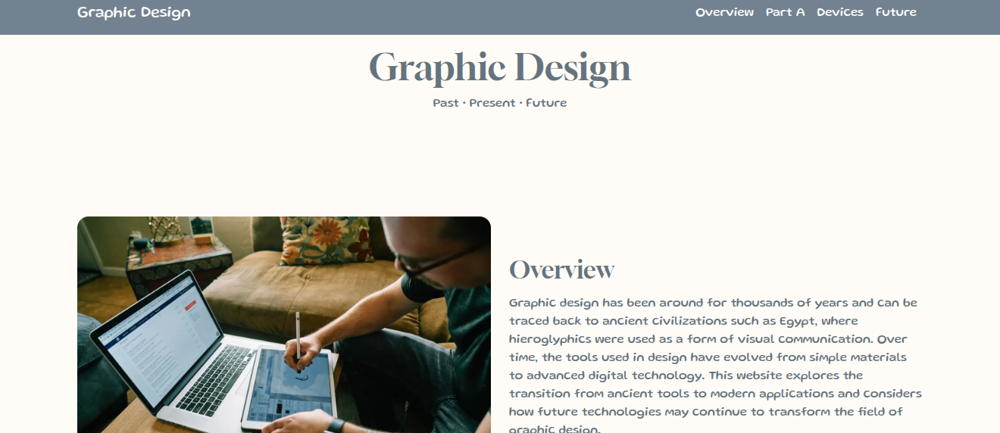

After learning more advanced HTML and CSS skills in SEP, I was assigned a project to create a website on a topic of my choice. I decided to create a website about graphic design and technology because I am interested in how design and technology work together. The purpose of this project was to demonstrate my web development skills while creating an informative and visually appealing website.
For this project, I created a website that explores both current and future technology used in graphic design. The website includes information about design software, digital art tools, and other technologies that designers use today. I also created a section about future technology where I shared my own ideas about how graphic design could evolve through artificial intelligence, virtual reality, and interactive design tools.
To build the website, I used HTML to create the structure and CSS to design the layout. I included headings, paragraphs, images, links, and different sections to organize information clearly. My goal was to create a clean and modern design that matched the technology theme of the project.
One challenge I faced was creating a layout that looked professional while still being easy to navigate. At first, some sections appeared crowded and the spacing between elements was inconsistent. I adjusted margins, padding, and alignment until the website looked more organized and visually appealing.
Another challenge was choosing colors and images that matched the futuristic theme of the website. I experimented with different color combinations and design ideas before finding a style that fit the overall purpose of the project.
A major takeaway from this project was learning how important design choices are when building a website. I learned that color schemes, spacing, fonts, and layouts can affect how users experience a webpage. I also improved my problem-solving skills by testing different solutions whenever I encountered design issues.
This project helped me become more confident using HTML and CSS. I gained a better understanding of how structure and styling work together to create an engaging and effective website.
If I continued working on this project, I would add more interactive features such as animations, hover effects, and additional pages about emerging technology trends. I would also expand my future technology section by adding more original ideas and detailed explanations.
Overall, I am proud of this project because it allowed me to combine creativity with technology while strengthening my web development skills. The experience helped me better understand website design and gave me valuable experience creating a complete webpage from start to finish.
Code of Project